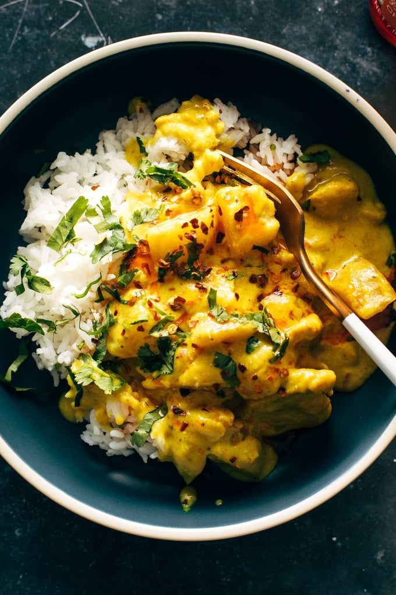

Curry Chicken Recipe

My classic Thai curry recipe.
Ingredients
- 2 lbs chicken thighs
- 0.5 cups greek yogurt
- 1.5 tbsp minced garlic
- 1 tbsp minced ginger
- 2 tsp garam marsala
- 1 teaspoon tumaric
- 1 tsp ground cumin
- 1 tsp red chili powder
- 1 tsp salt
- 1 onion
- 14 oz crushed tomatoes
- Coconut oil
- 1 cup heavy cream
Directions
- Marinate the chicken with the spices and greek yogurt. let rest for 2 hours or overnight in thr fridge.
- Sear chicken in hot pan until brown. Does not need to be cooked all the way through
- Cook onion for 6 minutes, then add tomatoes and cook for 15 minutes.
- Blend onion and tomatoes until smooth and return to pot.
- Chop chicken into bite size pieces and return to pot with juice. Add coconut oil
- Cook until chicken is 165F internal. Serve over rice or with naan.